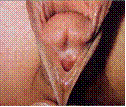
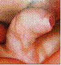
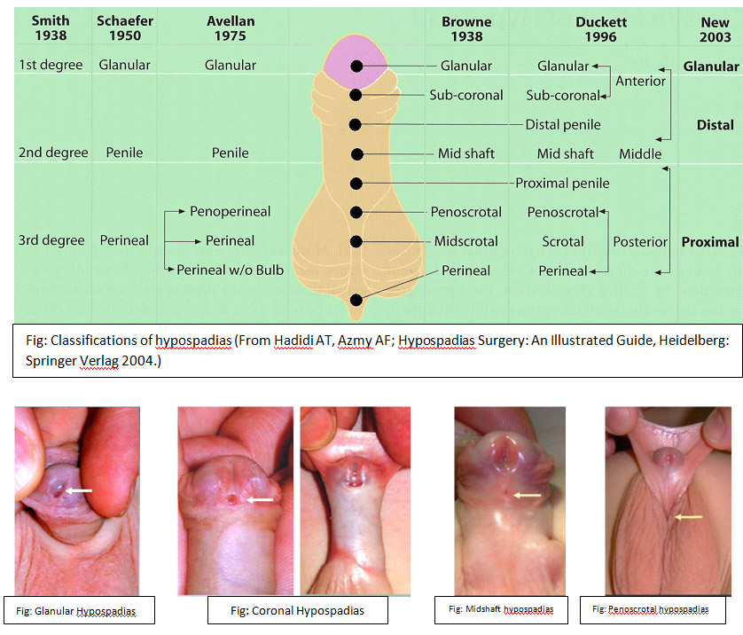
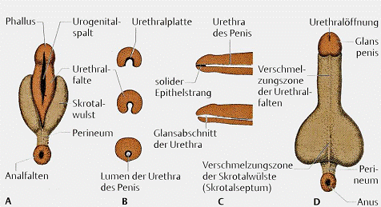
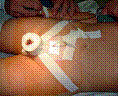
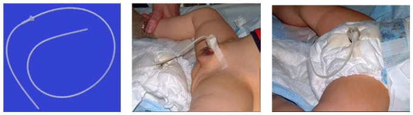

Introduction
The term hypospadias is derived from the Greek words hypo (below, too little) and Spadone (crack, gutter). Hypospadias is the most common congenital defect of the penis. It is characterized by the abnormal position of urethral meatus on the ventral penile shaft. Structures affected in varying degrees are the anterior urethral portion, the glans, the prepuce, the corpus spongiosum and corpora cavernosa.
Depending on the severity of the defect, effects range from purely aesthetic to severe functional disorders, with accompanying mental health problems. Patients with severe untreated hypospadias can´t achieve normality regarding micturition and sexual life.
About 400 surgical techniques have been published, but the search for the “perfect hypospadias correction” continues. Since nowadays the aesthetic result has nearly the same relevance as the functional outcome, the strategies and objectives have refined the hypospadias correction technique further and the concept of hypospadiologists was coined by Duckett in1995. Because it is a complex plastic and reconstructive procedure with a significant learning curve, this type of operation should be performed only at centers with extensive experience.
Since the surgical treatment is usually done early in childhood and purely cosmetic procedures have a significant complication rate, parents should be given full information with respect to the rationale for surgery ( cosmetic v/s functional or both) to facilitate their decision for or against a surgical correction.
Definition
Hypospadias is defined as the combination of three anatomical abnormalities of the penis:

Ectopic meatus and dorsal winged prepuce

Ventral penile shaft desviation
The 2nd and 3rd characteristics may not necessarily be present. In contrast, the first feature is an unconditional part of the definition.
Special cases are the “Sine” hypospadias and the "Megalomeatus"
The sine hypospadias is characterized by a ventral curvature of the penile shaft and an orthotopic position of the meatus.
Classification
The most common classification was published by Duckett in 1996. He divided them into anterior (50%), middle (30%) and posterior (20%) hypospadias.
These are also classified according to the location of the meatus.
Other classifications are listed in the following figure.
Frequency
The incidence of hypospadias has been reported to be anywhere between 0.4 to 8.2 cases per 1000 newborn boys. The large differences in frequency have their origin in geographical, genetic and environmental influences, as well as the variety of data collection. According to the "Centers for Disease Control" the highest probability of hypospadias is in the Caucasian population followed by African-Americans and then the Hispanic Americans.
The incidence of hypospadias is increasing in both Europe and North America but the reasons are not yet clearly understood. According to information from the "Birth Defects Monitoring Program”, reports show an increase in the incidence of 20.2 per 10,000 in 1970 to 39.7 per 10,000 children born in the U.S.A. This increase was independent of improvements in medical care and improved diagnostics. Similarly, according to Borer and Retik (1999), there has been an increase in the number of more severe hypospadias five fold compared with the more distal forms. This can be explained by the increase in the number of premature births, and the contact of the fetus with progesterone or other substances with estrogenic or anti-androgenic effect. On the other hand, there has not been an increase in the incidence in developing countries.
Etiology
The etiology of hypospadias is multifactorial. In 66-75% of hypospadias the cause remains unknown (Spindler et al. 2001). Somatic sexual development is associated with essential androgens. Therefore, it seems likely that defects in the androgen synthesis or its action during embryogenesis lead to hypospadias.
According to Spindler et al. (2001), hypospadias is also found in the most common disorder of sex development, the familial male pseudohermaphroditism. Zhu et al. (1998), and Geraudie and Ferreti (1998) demonstrated androgen metabolism failure, androgen receptor defects or genetic disorders in less than 5% of patients. Another cause is the ingestion of substances with estrogenic activity, such as insecticides, natural estrogens, organic products from the manufacture of plastics and pesticides, which are included in food. These are suspected to be the cause of increased incidence of hypospadias in developed countries. Semenza et al. showed in 1997, after animal models, that estrogens can lead to developmental delay and stop development of the penis.
A genetic predisposition is discussed as a cause of hypospadias. The probability to have a second child with hypospadias is 14%. If the father has hypospadias, the probability that one of his sons suffers from the same pathology is 8%. Similarly, hypospadias is present in many syndromes, such as Smith-Lemli-Opitz syndrome or Robinow syndrome. However, in these cases the exact cause is unknown
Risk Factors
There is an increased probability for the occurrence of hypospadias, under certain conditions
Embryology
The chromosomal sex is determined at fertilization by haploid sperm. If a Y chromosome is present, the indifferent gonad in stage 18 is differentiated into a testis and determines the gonadal sex. The formation of the somatic sex is determined by the existing gonad. Androgens are formed in the fetal testis. The Sertoli cells produce the Anti Müllerian Hormone (AMH) and the Leydig cells the testosterone. The distribution of these two hormones is responsible for the development of the male genitalia (Drews 2006). These hormones induce the extension of the genital tubercle into the penis. Growth in length is formed on both sides of the so-called urethral genital tubercle. Thus, the urethral folds form the lateral walls of the deep urethral groove. With the disappearance of the urogenital membrane a column is formed, which grows until the bottom of the genital tubercle, but falls short of the distal glans. Endodermal cells from the epithelial lining of the column form the urethral plate. Towards the end of the third month the urethral folds join above the urethral plate to form the penile urethra. The fusion area of the urethral folds migrates from the base to the tip of the penis. However, the tip of the penis is not reached.
By the end of the fourth month the distal portion of the urethra is formed, through the migration of the endoderm cells from the tip of the penis inward, forming a short epithelial cord, which grows on the existing urethra. This epithelial cord is channeled to form the definitive urethral meatus at the tip of the glans. The exception to this is the concept of endodermal differentiation, according to which the urothelium along the urethra comes from the urogenital sinus.
Therefore, the urethra is formed by the continuous growth of the urethral plate in the genital tubercle, followed by the ventral fusion of the urethra.
The edges of the urethral plate grow forward over the coronary sulcus and give rise to the foreskin, and a circular epithelial plate sinks between the folds and the glans.

Fig: Development of the external genitalia in the male fetus
Pathogenesis
Hypospadias is caused by the arrest of normal development of the urethra, at various stages of embryonic development (9 to 13 weeks of pregnancy). From the final shape of the anomaly, the time when the disturbance occurred can be predicted. In addition to the disturbances in the development of the urethra, the development of the raphe and the foreskin can also be compromised. This results in hypospadias with deviation from the raphe, the formation of a redundant dorsal prepuce foreskin and other ventral defects of the prepuce.
The penile shaft deviation can have several causes:
Diagnosis:
Treatment options:
Urinary diversion
For most techniques a urinary diversion is performed to prevent urination trough the newly created urethra, to support wound healing for some time.
Basically there are three different types of urinary diversion available:

The importance of urinary diversion for preventing postoperative complications is not clear. One advantage of the transurethral drainage, especially with "dripping stent and double diaper, is that it is much more comfortable, since the child can be mobilized quickly, while a suprapubic drainage system forces him to rest in bed.
Complications
The complication rate of of hypospadias correction is considerable, from 30 to 50%.
The complications rate is essentially dependent on the severity of hypospadias, the patient's age at the time of surgical correction, the reconstruction technique used, the quality of the surrounding tissue for the reconstruction, the medical equipment and the surgeon's skills and experience and the number of previous interventions.
Childhood and Hypospadias
The psychological development of the child with hypospadias is affected by those common variables which affect all children, those pertaining to children with a physical disorder and the requirement for medical and surgical intervention and those very specific to children with a genital anomaly. General principles for good psychological management of any child with a disorder involve minimum disruption of family, school and social life, maximum opportunity for calm informed empowerment through access to information, training and practical and emotional support.
Clinicians need to be alert to risk factors and to co-morbidities in either child or parent, including social disadvantage, parental psychopathology, parenting capabilities and coping styles, and extreme adverse attitudinal and belief systems in a parent or parents, in the nuclear family or in the cultural group.
Chronic childhood illness is a well-recognised stressor for children and their families. Findings for specific disorders vary but the risk for adjustment disorder is estimated to be 1.5-3 times as high as for healthy peers. Chronic childhood conditions increase the risk of parental adjustment disorder. The emotional impact and the practical burden fall mainly on the mother. There is a significant increase in levels of distress compared with mothers of well children. The risk of adjustment difficulty is related to disorder severity but more strongly to illness length and degree of functional impairment.
It is important to be alert to the specific risks and protective factors for male children. There is a known greater incidence of psychological disorder in boys generally.
The number of single parents and changing male partnerships and the absence of the natural father in households is a source of concern. Children are known to be adversely affected by ambivalent relationships, by parental anxiety, by exposure to harsh and inconsistent discipline, by separation during attachment, by disruption of peer attachment and schooling, by exposure to fear and trauma and by poor communication, particularly in relation to the expression of feeling states and the development of reassuring and explanatory concepts.
There is evidence that the children who are at greatest risk of developing a secondary psychological disorder are those with pre-existing disadvantage and vulnerability and poorly functioning families.
References
Editorial Comment
The incidence of hypospadias is increasing in the western world. In my personal experience, the increase seems to be predominantly of the more distal variety or the ‘minor’ hypospadias. The author has very clearly described the embryopathogenesis of hypospadias and the principles of correction.
The important aspect of hypospadias surgery is giving the parents full information about the condition before obtaining consent. In the very distal hypospadias with a straight penis, minimal glans tilt and a typical dorsal hood, the main if not the only reason for surgery is aesthetic. This should be made very clear to the parents. I have seen adult men with a minor hypospadias having no functional difficulties in terms of micturition or sexual function. The inevitable question parents ask is ‘ What will the penis look like when he is older?’ If only I had a crystal ball to gaze into the future and identify those boys who would be psychologically affected by their minor penile cosmetic blemish, decision making in terms of who should undergo surgery would be so much easier.
The other point is who should perform hypospadias surgery. I do not feel there should be an occasional hypospadias surgeon as the best outcomes are achieved by those performing these procedures on a regular basis. Outcomes are therefore very important and should guide the surgeon in their own practice but should also guide the patients/carers in choosing their surgeon. The technique of choice depends on the surgeon as long as the principles of correction are followed and outcomes achieved. It is safe to say that rather than experimenting with different techniques, it is better to stick to a ‘tried and tested’ technique which the surgeon can reproduce over and over again with similar outcomes.
PPG
 |
 |
 |
 |
 |
 |
 |
 |